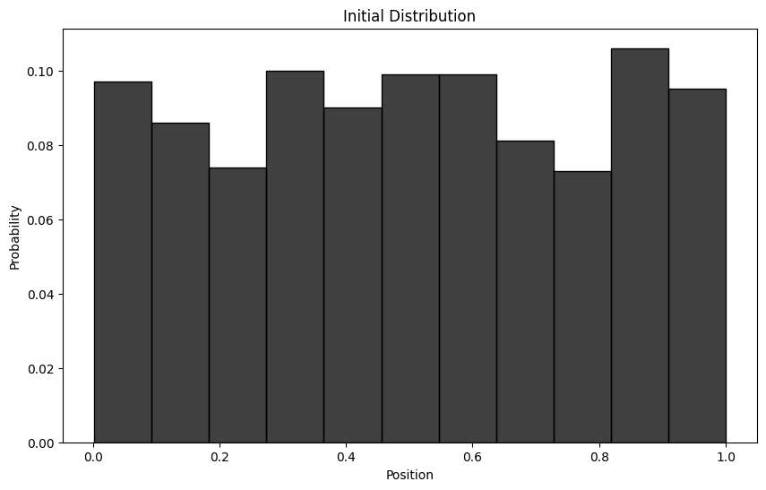
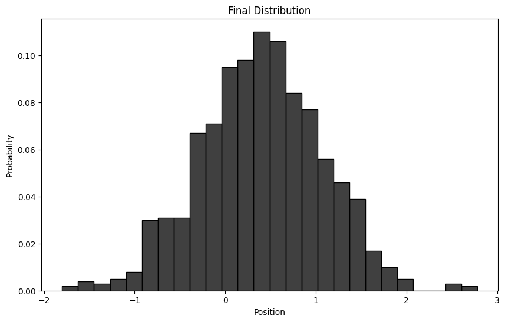
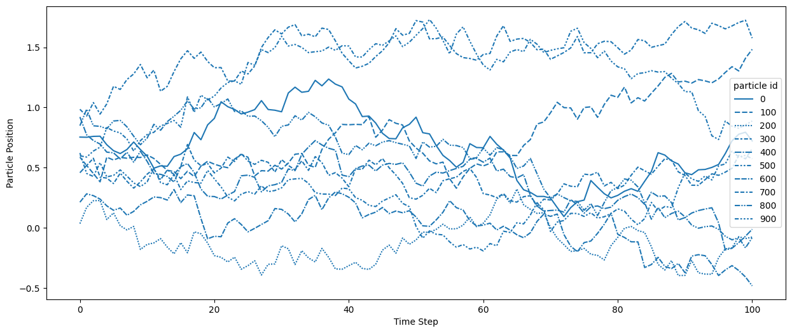
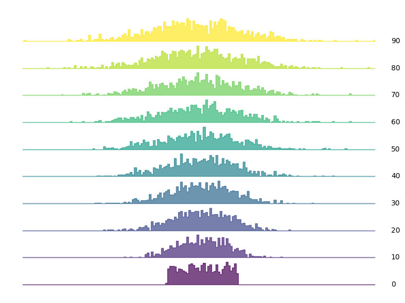
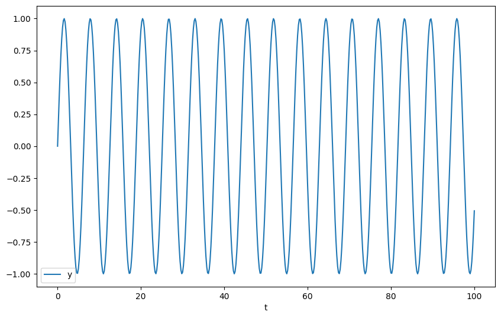
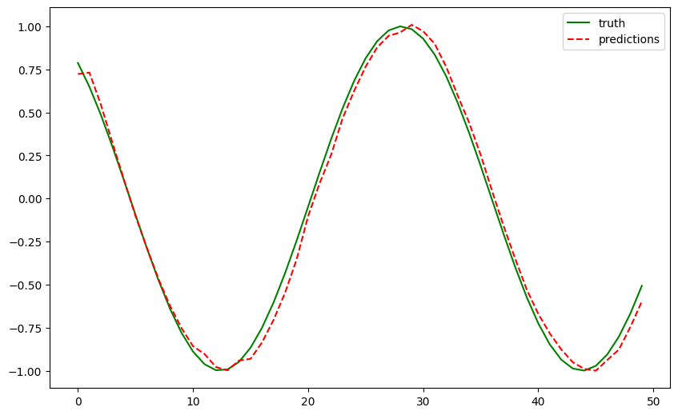

Diffusion Model¶
References:
1. pts/model/time_grad/time_grad_network.py
import dataclasses
from functools import cached_property
import numpy as np
import pandas as pd
import plotly.express as px
import torch
import torch.nn as nn
from loguru import logger
@dataclasses.dataclass
class DiffusionPocessParams:
"""Parameter that defines a diffusion process.
:param steps: Number of steps in the diffusion process.
:param beta: Beta parameter for the diffusion process.
"""
steps: int
beta: float
@cached_property
def alpha(self) -> float:
r"""$\alpha = 1 - \beta$"""
return 1.0 - self.beta
@cached_property
def beta_by_step(self) -> np.ndarray:
"""the beta parameter for each step
in the diffusion process.
"""
return np.array([self.beta] * self.steps)
@cached_property
def alpha_by_step(self) -> np.ndarray:
"""the alpha parameter for each step
in the diffusion process."""
return np.array([self.alpha] * self.steps)
class DiffusionProcess:
"""
Diffusion process.
:param params: DiffusionParams that defines
how the diffusion process works
:param noise: noise tensor,
shape is (batch_size, params.steps)
"""
def __init__(
self,
params: DiffusionPocessParams,
noise: torch.Tensor,
dtype: torch.dtype = torch.float32,
):
self.params = params
self.noise = noise
self.dtype = dtype
@cached_property
def alpha_by_step(self) -> torch.Tensor:
"""The alpha parameter for each step
in the diffusion process.
"""
return torch.tensor(self.params.alpha_by_step, dtype=self.dtype)
def _forward_process_by_step(self, state: torch.Tensor, step: int) -> torch.Tensor:
r"""Assuming that we know
the noise at step $t$,
$$
x(t) = \sqrt{\alpha(t)}x(t-1)
+ \sqrt{1 - \alpha(t)}\epsilon(t)
$$
:param state: The state at step $t-1$.
:param step: The current step $t$.
:return: The state at step $t$.
"""
return (
torch.sqrt(self.alpha_by_step[step]) * state
+ torch.sqrt(1 - self.alpha_by_step[step]) * self.noise[:, step]
)
def _inverse_process_by_step(self, state: torch.Tensor, step: int) -> torch.Tensor:
r"""Assuming that we know
the noise at step $t$,
$$
x(t-1) = \frac{1}{\sqrt{\alpha(t)}}
(x(t) - \sqrt{1 - \alpha(t)}\epsilon(t))
$$
"""
return (
state - torch.sqrt(1 - self.alpha_by_step[step]) * self.noise[:, step]
) / torch.sqrt(self.alpha_by_step[step])
def gaussian_noise(n_var: int, length: int) -> torch.Tensor:
"""Generate a Gaussian noise tensor.
:param n_var: Number of variables.
:param length: Length of the tensor.
"""
return torch.normal(mean=0, std=1, size=(n_var, length))
diffusion_process_params = DiffusionPocessParams(
steps=100,
beta=0.005,
# beta=0,
)
diffusion_batch_size = 1000
# diffusion_batch_size = 2
noise = gaussian_noise(diffusion_batch_size, diffusion_process_params.steps)
diffusion_process = DiffusionProcess(diffusion_process_params, noise=noise)
# diffusion_initial_x = torch.sin(
# torch.linspace(0, 1, diffusion_batch_size)
# .reshape(diffusion_batch_size)
# )
diffusion_initial_x = torch.rand(diffusion_batch_size)
# diffusion_initial_x = (
# torch.distributions.Beta(torch.tensor([0.5]), torch.tensor([0.5]))
# .sample((diffusion_batch_size, 1))
# .reshape(diffusion_batch_size)
# )
diffusion_initial_x
tensor([0.7536, 0.4834, 0.2725, 0.4402, 0.3182, 0.6672, 0.1673, 0.5404, 0.4067,
0.7054, 0.8827, 0.8709, 0.7129, 0.1326, 0.8437, 0.0955, 0.4977, 0.3243,
0.8288, 0.8126, 0.0969, 0.1552, 0.0496, 0.9418, 0.8736, 0.3177, 0.8175,
0.1994, 0.9418, 0.2020, 0.5799, 0.2483, 0.2041, 0.6654, 0.1592, 0.3804,
0.5947, 0.6441, 0.6036, 0.3260, 0.9430, 0.9195, 0.8601, 0.8360, 0.2365,
0.9118, 0.9763, 0.4900, 0.0756, 0.9563, 0.6160, 0.8516, 0.3618, 0.9157,
0.2769, 0.4257, 0.8229, 0.5218, 0.8965, 0.8164, 0.5145, 0.6978, 0.6188,
0.4195, 0.0356, 0.0889, 0.8554, 0.9192, 0.5285, 0.8589, 0.1101, 0.5923,
0.1385, 0.3004, 0.8923, 0.0815, 0.2056, 0.8347, 0.3738, 0.5608, 0.1239,
0.6954, 0.5872, 0.5123, 0.3754, 0.8145, 0.8538, 0.0713, 0.5971, 0.5287,
0.0624, 0.6684, 0.3870, 0.0232, 0.9381, 0.8042, 0.0024, 0.3759, 0.9874,
0.6877, 0.4573, 0.4705, 0.7036, 0.1097, 0.9186, 0.1192, 0.6941, 0.1958,
0.2448, 0.8155, 0.1737, 0.3155, 0.7732, 0.6115, 0.9586, 0.5085, 0.6261,
0.0438, 0.5883, 0.4588, 0.6946, 0.7486, 0.6464, 0.3928, 0.4213, 0.0606,
0.8127, 0.4440, 0.5071, 0.3382, 0.3160, 0.2012, 0.2459, 0.2496, 0.4612,
0.4446, 0.4209, 0.5457, 0.5051, 0.3283, 0.2671, 0.0124, 0.8184, 0.7729,
0.5773, 0.7450, 0.5006, 0.3567, 0.9014, 0.9247, 0.6198, 0.2146, 0.9892,
0.6337, 0.6458, 0.8652, 0.8936, 0.3417, 0.2023, 0.3670, 0.0434, 0.5316,
0.0500, 0.4267, 0.5302, 0.2976, 0.4130, 0.8654, 0.9823, 0.1026, 0.0530,
0.8817, 0.0374, 0.7322, 0.4900, 0.3551, 0.5620, 0.0782, 0.1717, 0.0239,
0.9409, 0.8226, 0.7411, 0.3194, 0.7940, 0.9687, 0.0305, 0.7016, 0.8890,
0.9251, 0.1848, 0.7994, 0.0170, 0.6316, 0.3225, 0.5723, 0.8267, 0.5019,
0.3198, 0.8215, 0.0337, 0.5008, 0.4958, 0.7470, 0.4909, 0.3167, 0.7920,
0.5701, 0.7806, 0.9546, 0.0487, 0.1813, 0.8509, 0.1086, 0.3642, 0.7095,
0.3045, 0.1956, 0.3918, 0.7228, 0.9352, 0.7958, 0.9975, 0.4344, 0.6057,
0.0816, 0.0443, 0.3103, 0.9619, 0.8549, 0.5220, 0.4791, 0.4700, 0.9056,
0.7867, 0.8700, 0.2858, 0.2602, 0.0282, 0.2518, 0.8653, 0.8875, 0.0959,
0.6682, 0.1124, 0.4574, 0.9996, 0.3322, 0.3931, 0.3487, 0.7859, 0.8433,
0.9569, 0.2757, 0.4772, 0.4649, 0.9852, 0.9583, 0.3092, 0.6877, 0.1214,
0.6203, 0.0752, 0.2042, 0.8638, 0.8602, 0.9755, 0.7772, 0.9566, 0.0891,
0.5076, 0.0258, 0.0139, 0.4874, 0.9799, 0.1189, 0.3678, 0.1556, 0.8836,
0.6997, 0.3204, 0.3730, 0.6267, 0.3077, 0.4801, 0.4581, 0.9421, 0.0842,
0.5335, 0.2302, 0.3325, 0.4903, 0.9428, 0.5619, 0.3496, 0.3679, 0.9995,
0.8568, 0.6528, 0.1565, 0.9848, 0.5568, 0.5691, 0.4950, 0.3927, 0.2281,
0.8991, 0.1647, 0.9562, 0.0798, 0.5997, 0.6985, 0.5622, 0.0132, 0.6827,
0.5300, 0.2692, 0.1643, 0.7261, 0.0379, 0.9980, 0.8012, 0.3453, 0.1507,
0.7441, 0.8861, 0.0742, 0.0168, 0.3470, 0.9566, 0.8102, 0.6357, 0.3327,
0.2776, 0.0795, 0.4942, 0.2863, 0.8840, 0.3729, 0.7207, 0.7621, 0.5595,
0.9594, 0.8560, 0.7084, 0.5003, 0.5694, 0.1013, 0.1138, 0.8116, 0.5994,
0.6108, 0.7928, 0.1270, 0.8380, 0.0703, 0.4886, 0.0367, 0.5597, 0.7508,
0.8121, 0.9413, 0.1954, 0.2135, 0.2518, 0.6269, 0.2142, 0.2945, 0.9089,
0.4660, 0.5189, 0.5268, 0.4324, 0.5898, 0.4311, 0.9745, 0.0329, 0.9623,
0.6344, 0.1826, 0.5811, 0.8672, 0.8200, 0.5668, 0.1688, 0.4302, 0.3826,
0.3359, 0.3025, 0.3504, 0.1921, 0.6246, 0.3486, 0.1785, 0.4811, 0.7434,
0.0558, 0.7108, 0.4147, 0.0507, 0.9207, 0.8845, 0.6140, 0.9616, 0.3362,
0.9684, 0.2572, 0.6240, 0.0916, 0.9795, 0.9427, 0.9679, 0.5308, 0.2262,
0.1101, 0.9380, 0.6164, 0.3556, 0.6628, 0.1159, 0.5128, 0.8538, 0.8104,
0.8094, 0.9814, 0.2217, 0.2853, 0.4712, 0.3195, 0.4851, 0.7147, 0.9655,
0.0893, 0.6000, 0.1114, 0.0551, 0.0052, 0.1006, 0.7330, 0.6732, 0.1298,
0.5724, 0.1562, 0.2453, 0.6039, 0.3385, 0.2932, 0.4384, 0.5299, 0.2081,
0.3525, 0.0829, 0.5762, 0.1200, 0.3875, 0.1217, 0.4433, 0.9419, 0.0383,
0.7981, 0.3716, 0.6886, 0.8513, 0.3691, 0.4192, 0.9425, 0.8899, 0.7040,
0.8022, 0.9326, 0.3105, 0.6288, 0.8834, 0.8331, 0.0120, 0.7035, 0.2927,
0.5725, 0.2115, 0.8342, 0.8126, 0.1226, 0.6824, 0.6779, 0.3980, 0.3593,
0.9737, 0.3040, 0.4713, 0.9109, 0.2343, 0.7385, 0.1809, 0.6612, 0.4121,
0.8644, 0.3596, 0.2745, 0.8517, 0.2816, 0.6212, 0.0944, 0.5489, 0.8383,
0.5986, 0.0235, 0.3884, 0.7555, 0.5689, 0.5210, 0.1662, 0.1520, 0.0614,
0.8416, 0.8402, 0.7078, 0.7201, 0.3578, 0.4410, 0.7259, 0.3709, 0.6305,
0.1448, 0.7542, 0.5934, 0.5828, 0.0705, 0.9386, 0.3758, 0.9017, 0.6706,
0.9367, 0.3203, 0.2718, 0.1526, 0.6501, 0.7947, 0.8928, 0.7012, 0.6307,
0.0319, 0.8314, 0.5148, 0.7734, 0.9511, 0.6231, 0.9352, 0.7125, 0.8649,
0.2530, 0.8865, 0.3526, 0.2248, 0.5213, 0.2566, 0.9589, 0.4104, 0.9293,
0.8581, 0.6148, 0.5094, 0.6389, 0.1481, 0.6687, 0.1251, 0.4445, 0.1234,
0.7877, 0.4810, 0.4036, 0.4687, 0.1786, 0.7034, 0.0685, 0.0455, 0.6618,
0.7716, 0.3464, 0.0030, 0.6898, 0.7348, 0.0406, 0.0724, 0.5815, 0.6061,
0.0085, 0.0046, 0.5402, 0.8789, 0.8594, 0.5769, 0.6630, 0.5956, 0.6396,
0.3848, 0.9568, 0.9629, 0.5021, 0.4377, 0.3914, 0.2121, 0.1134, 0.5525,
0.5040, 0.0954, 0.1688, 0.0460, 0.1934, 0.0825, 0.9675, 0.9240, 0.9395,
0.4294, 0.0163, 0.4429, 0.6879, 0.3180, 0.1544, 0.2139, 0.9927, 0.1030,
0.5049, 0.7499, 0.1990, 0.1086, 0.3293, 0.7779, 0.1641, 0.8838, 0.2883,
0.6641, 0.3507, 0.8780, 0.3299, 0.4161, 0.5902, 0.3217, 0.8701, 0.3461,
0.8941, 0.7915, 0.3228, 0.0041, 0.2842, 0.8235, 0.7769, 0.7291, 0.4020,
0.5166, 0.5852, 0.3286, 0.3989, 0.4018, 0.6776, 0.4310, 0.9864, 0.3931,
0.5190, 0.9566, 0.0380, 0.6076, 0.0917, 0.7251, 0.3655, 0.8015, 0.2181,
0.1679, 0.7674, 0.8878, 0.7956, 0.0478, 0.9883, 0.5244, 0.1151, 0.2866,
0.1940, 0.8358, 0.5085, 0.4416, 0.4401, 0.3130, 0.3635, 0.0862, 0.5520,
0.4258, 0.3292, 0.5430, 0.6098, 0.6241, 0.1857, 0.2064, 0.3411, 0.4398,
0.3613, 0.7945, 0.3707, 0.3429, 0.3646, 0.6793, 0.7016, 0.5864, 0.5508,
0.6977, 0.8368, 0.4179, 0.4651, 0.6798, 0.2080, 0.6929, 0.8651, 0.3249,
0.4109, 0.0362, 0.3898, 0.0333, 0.8294, 0.1051, 0.1601, 0.3477, 0.2342,
0.4063, 0.2863, 0.2275, 0.6926, 0.4330, 0.8808, 0.2934, 0.6231, 0.7156,
0.3053, 0.3558, 0.3603, 0.3705, 0.5056, 0.3209, 0.9509, 0.0439, 0.4579,
0.9369, 0.7425, 0.0894, 0.9678, 0.0609, 0.5145, 0.8526, 0.9461, 0.0372,
0.6112, 0.1966, 0.7074, 0.1111, 0.9575, 0.3743, 0.5655, 0.8483, 0.1346,
0.9173, 0.7396, 0.5688, 0.1121, 0.5051, 0.7729, 0.2625, 0.3863, 0.6609,
0.3803, 0.8356, 0.2427, 0.0158, 0.9816, 0.1572, 0.3020, 0.6765, 0.4510,
0.8699, 0.4699, 0.1707, 0.8354, 0.5973, 0.7797, 0.8662, 0.9724, 0.2569,
0.5795, 0.5448, 0.2486, 0.6990, 0.6143, 0.2464, 0.1365, 0.5206, 0.5761,
0.4834, 0.4133, 0.2306, 0.1325, 0.2312, 0.7655, 0.8327, 0.6559, 0.8485,
0.4644, 0.7085, 0.7376, 0.8297, 0.8117, 0.3835, 0.0960, 0.6035, 0.1222,
0.0584, 0.5351, 0.3877, 0.0170, 0.6698, 0.4382, 0.1681, 0.8570, 0.2045,
0.7563, 0.8983, 0.6200, 0.2103, 0.1738, 0.3167, 0.6492, 0.3741, 0.8185,
0.8998, 0.9518, 0.7957, 0.5217, 0.9041, 0.0116, 0.3445, 0.0111, 0.0897,
0.7373, 0.1621, 0.7205, 0.8048, 0.9386, 0.0194, 0.7830, 0.5620, 0.9068,
0.5320, 0.4034, 0.5624, 0.6649, 0.6688, 0.4081, 0.0133, 0.0074, 0.3938,
0.5309, 0.1618, 0.3107, 0.1994, 0.4485, 0.9937, 0.6936, 0.6005, 0.2499,
0.7247, 0.1267, 0.1053, 0.8252, 0.2525, 0.8579, 0.8210, 0.0271, 0.5072,
0.7891, 0.4660, 0.6999, 0.4972, 0.4240, 0.9083, 0.2635, 0.9579, 0.9603,
0.8706, 0.0737, 0.5034, 0.3621, 0.5719, 0.4653, 0.8957, 0.4518, 0.0633,
0.8474, 0.9854, 0.5861, 0.5396, 0.9708, 0.9414, 0.2176, 0.1320, 0.8603,
0.5981, 0.9059, 0.6002, 0.7034, 0.0027, 0.9135, 0.3048, 0.5421, 0.4822,
0.4145, 0.7112, 0.9924, 0.4943, 0.0727, 0.0933, 0.3809, 0.4957, 0.3482,
0.0645, 0.4314, 0.0621, 0.5265, 0.5011, 0.2208, 0.7377, 0.1252, 0.1005,
0.9528, 0.6010, 0.5324, 0.3054, 0.5611, 0.5873, 0.1508, 0.8871, 0.7257,
0.3487, 0.5772, 0.0358, 0.8324, 0.6195, 0.5114, 0.2814, 0.5313, 0.1116,
0.7075, 0.0117, 0.5739, 0.2206, 0.2997, 0.9826, 0.8856, 0.9444, 0.4696,
0.0698, 0.2634, 0.5139, 0.8261, 0.9214, 0.8207, 0.0948, 0.0316, 0.0720,
0.3445, 0.5992, 0.5615, 0.8757, 0.9545, 0.3936, 0.5483, 0.6356, 0.9710,
0.8348, 0.1497, 0.0631, 0.2378, 0.3414, 0.2341, 0.1854, 0.7043, 0.0623,
0.4871, 0.2675, 0.3109, 0.5685, 0.4475, 0.7261, 0.9365, 0.8181, 0.4494,
0.1333, 0.2316, 0.7906, 0.7714, 0.1546, 0.7626, 0.0610, 0.3414, 0.3653,
0.1841])
Forward process step by step¶
diffusion_steps_step_by_step = [diffusion_initial_x.detach().numpy()]
for i in range(0, diffusion_process_params.steps):
logger.info(f"step {i}")
i_state = (
diffusion_process._forward_process_by_step(
torch.from_numpy(diffusion_steps_step_by_step[-1]), step=i
)
.detach()
.numpy()
)
logger.info(f"i_state {i_state[:2]}")
diffusion_steps_step_by_step.append(i_state)
Output (61 lines)
... (80 earlier lines)
[32m2025-05-23 23:28:27.322[0m | [1mINFO [0m | [36m__main__[0m:[36m<module>[0m:[36m4[0m - [1mstep 40[0m
[32m2025-05-23 23:28:27.323[0m | [1mINFO [0m | [36m__main__[0m:[36m<module>[0m:[36m12[0m - [1mi_state [ 1.029287 -0.42594546][0m
[32m2025-05-23 23:28:27.323[0m | [1mINFO [0m | [36m__main__[0m:[36m<module>[0m:[36m4[0m - [1mstep 41[0m
[32m2025-05-23 23:28:27.324[0m | [1mINFO [0m | [36m__main__[0m:[36m<module>[0m:[36m12[0m - [1mi_state [ 0.92436755 -0.5229795 ][0m
... (66 lines omitted) ...
[32m2025-05-23 23:28:27.354[0m | [1mINFO [0m | [36m__main__[0m:[36m<module>[0m:[36m12[0m - [1mi_state [0.16661346 0.10516387][0m
[32m2025-05-23 23:28:27.354[0m | [1mINFO [0m | [36m__main__[0m:[36m<module>[0m:[36m4[0m - [1mstep 73[0m
[32m2025-05-23 23:28:27.355[0m | [1mINFO [0m | [36m__main__[0m:[36m<module>[0m:[36m12[0m - [1mi_state [0.21610051 0.1195906 ][0m
[32m2025-05-23 23:28:27.355[0m | [1mINFO [0m | [36m__main__[0m:[36m<module>[0m:[36m4[0m - [1mstep 74[0m
[32m2025-05-23 23:28:27.356[0m | [1mINFO [0m | [36m__main__[0m:[36m<module>[0m:[36m12[0m - [1mi_state [0.2297513 0.20118043][0m
[32m2025-05-23 23:28:27.356[0m | [1mINFO [0m | [36m__main__[0m:[36m<module>[0m:[36m4[0m - [1mstep 75[0m
[32m2025-05-23 23:28:27.356[0m | [1mINFO [0m | [36m__main__[0m:[36m<module>[0m:[36m12[0m - [1mi_state [0.3925485 0.18007368][0m
[32m2025-05-23 23:28:27.357[0m | [1mINFO [0m | [36m__main__[0m:[36m<module>[0m:[36m4[0m - [1mstep 76[0m
[32m2025-05-23 23:28:27.358[0m | [1mINFO [0m | [36m__main__[0m:[36m<module>[0m:[36m12[0m - [1mi_state [0.33611664 0.2712456 ][0m
[32m2025-05-23 23:28:27.358[0m | [1mINFO [0m | [36m__main__[0m:[36m<module>[0m:[36m4[0m - [1mstep 77[0m
[32m2025-05-23 23:28:27.358[0m | [1mINFO [0m | [36m__main__[0m:[36m<module>[0m:[36m12[0m - [1mi_state [0.282507 0.1722632][0m
[32m2025-05-23 23:28:27.359[0m | [1mINFO [0m | [36m__main__[0m:[36m<module>[0m:[36m4[0m - [1mstep 78[0m
[32m2025-05-23 23:28:27.359[0m | [1mINFO [0m | [36m__main__[0m:[36m<module>[0m:[36m12[0m - [1mi_state [0.24798693 0.26566544][0m
[32m2025-05-23 23:28:27.360[0m | [1mINFO [0m | [36m__main__[0m:[36m<module>[0m:[36m4[0m - [1mstep 79[0m
[32m2025-05-23 23:28:27.361[0m | [1mINFO [0m | [36m__main__[0m:[36m<module>[0m:[36m12[0m - [1mi_state [0.2687943 0.17412242][0m
[32m2025-05-23 23:28:27.361[0m | [1mINFO [0m | [36m__main__[0m:[36m<module>[0m:[36m4[0m - [1mstep 80[0m
[32m2025-05-23 23:28:27.362[0m | [1mINFO [0m | [36m__main__[0m:[36m<module>[0m:[36m12[0m - [1mi_state [0.3032606 0.10849762][0m
[32m2025-05-23 23:28:27.362[0m | [1mINFO [0m | [36m__main__[0m:[36m<module>[0m:[36m4[0m - [1mstep 81[0m
[32m2025-05-23 23:28:27.362[0m | [1mINFO [0m | [36m__main__[0m:[36m<module>[0m:[36m12[0m - [1mi_state [ 0.3244555 -0.01832873][0m
[32m2025-05-23 23:28:27.363[0m | [1mINFO [0m | [36m__main__[0m:[36m<module>[0m:[36m4[0m - [1mstep 82[0m
[32m2025-05-23 23:28:27.363[0m | [1mINFO [0m | [36m__main__[0m:[36m<module>[0m:[36m12[0m - [1mi_state [ 0.30285174 -0.07579676][0m
[32m2025-05-23 23:28:27.364[0m | [1mINFO [0m | [36m__main__[0m:[36m<module>[0m:[36m4[0m - [1mstep 83[0m
[32m2025-05-23 23:28:27.364[0m | [1mINFO [0m | [36m__main__[0m:[36m<module>[0m:[36m12[0m - [1mi_state [ 0.38575527 -0.02965767][0m
[32m2025-05-23 23:28:27.365[0m | [1mINFO [0m | [36m__main__[0m:[36m<module>[0m:[36m4[0m - [1mstep 84[0m
[32m2025-05-23 23:28:27.365[0m | [1mINFO [0m | [36m__main__[0m:[36m<module>[0m:[36m12[0m - [1mi_state [ 0.4670586 -0.14904383][0m
[32m2025-05-23 23:28:27.366[0m | [1mINFO [0m | [36m__main__[0m:[36m<module>[0m:[36m4[0m - [1mstep 85[0m
[32m2025-05-23 23:28:27.366[0m | [1mINFO [0m | [36m__main__[0m:[36m<module>[0m:[36m12[0m - [1mi_state [ 0.62384367 -0.10881869][0m
[32m2025-05-23 23:28:27.367[0m | [1mINFO [0m | [36m__main__[0m:[36m<module>[0m:[36m4[0m - [1mstep 86[0m
[32m2025-05-23 23:28:27.367[0m | [1mINFO [0m | [36m__main__[0m:[36m<module>[0m:[36m12[0m - [1mi_state [ 0.6041603 -0.11048407][0m
[32m2025-05-23 23:28:27.368[0m | [1mINFO [0m | [36m__main__[0m:[36m<module>[0m:[36m4[0m - [1mstep 87[0m
[32m2025-05-23 23:28:27.368[0m | [1mINFO [0m | [36m__main__[0m:[36m<module>[0m:[36m12[0m - [1mi_state [ 0.5557305 -0.05675536][0m
[32m2025-05-23 23:28:27.369[0m | [1mINFO [0m | [36m__main__[0m:[36m<module>[0m:[36m4[0m - [1mstep 88[0m
[32m2025-05-23 23:28:27.369[0m | [1mINFO [0m | [36m__main__[0m:[36m<module>[0m:[36m12[0m - [1mi_state [0.52949405 0.05057308][0m
[32m2025-05-23 23:28:27.370[0m | [1mINFO [0m | [36m__main__[0m:[36m<module>[0m:[36m4[0m - [1mstep 89[0m
[32m2025-05-23 23:28:27.370[0m | [1mINFO [0m | [36m__main__[0m:[36m<module>[0m:[36m12[0m - [1mi_state [0.4567793 0.08728948][0m
[32m2025-05-23 23:28:27.370[0m | [1mINFO [0m | [36m__main__[0m:[36m<module>[0m:[36m4[0m - [1mstep 90[0m
[32m2025-05-23 23:28:27.371[0m | [1mINFO [0m | [36m__main__[0m:[36m<module>[0m:[36m12[0m - [1mi_state [0.44138882 0.22891158][0m
[32m2025-05-23 23:28:27.371[0m | [1mINFO [0m | [36m__main__[0m:[36m<module>[0m:[36m4[0m - [1mstep 91[0m
[32m2025-05-23 23:28:27.372[0m | [1mINFO [0m | [36m__main__[0m:[36m<module>[0m:[36m12[0m - [1mi_state [0.4815395 0.17549463][0m
[32m2025-05-23 23:28:27.373[0m | [1mINFO [0m | [36m__main__[0m:[36m<module>[0m:[36m4[0m - [1mstep 92[0m
[32m2025-05-23 23:28:27.373[0m | [1mINFO [0m | [36m__main__[0m:[36m<module>[0m:[36m12[0m - [1mi_state [0.48461568 0.26058674][0m
[32m2025-05-23 23:28:27.373[0m | [1mINFO [0m | [36m__main__[0m:[36m<module>[0m:[36m4[0m - [1mstep 93[0m
[32m2025-05-23 23:28:27.374[0m | [1mINFO [0m | [36m__main__[0m:[36m<module>[0m:[36m12[0m - [1mi_state [0.50137323 0.22013015][0m
[32m2025-05-23 23:28:27.378[0m | [1mINFO [0m | [36m__main__[0m:[36m<module>[0m:[36m4[0m - [1mstep 94[0m
[32m2025-05-23 23:28:27.394[0m | [1mINFO [0m | [36m__main__[0m:[36m<module>[0m:[36m12[0m - [1mi_state [0.5260309 0.23809095][0m
[32m2025-05-23 23:28:27.402[0m | [1mINFO [0m | [36m__main__[0m:[36m<module>[0m:[36m4[0m - [1mstep 95[0m
[32m2025-05-23 23:28:27.407[0m | [1mINFO [0m | [36m__main__[0m:[36m<module>[0m:[36m12[0m - [1mi_state [0.61677593 0.19635743][0m
[32m2025-05-23 23:28:27.407[0m | [1mINFO [0m | [36m__main__[0m:[36m<module>[0m:[36m4[0m - [1mstep 96[0m
[32m2025-05-23 23:28:27.408[0m | [1mINFO [0m | [36m__main__[0m:[36m<module>[0m:[36m12[0m - [1mi_state [0.7224949 0.3069121][0m
[32m2025-05-23 23:28:27.409[0m | [1mINFO [0m | [36m__main__[0m:[36m<module>[0m:[36m4[0m - [1mstep 97[0m
[32m2025-05-23 23:28:27.409[0m | [1mINFO [0m | [36m__main__[0m:[36m<module>[0m:[36m12[0m - [1mi_state [0.7774506 0.35429615][0m
[32m2025-05-23 23:28:27.410[0m | [1mINFO [0m | [36m__main__[0m:[36m<module>[0m:[36m4[0m - [1mstep 98[0m
[32m2025-05-23 23:28:27.410[0m | [1mINFO [0m | [36m__main__[0m:[36m<module>[0m:[36m12[0m - [1mi_state [0.7941074 0.46556577][0m
[32m2025-05-23 23:28:27.411[0m | [1mINFO [0m | [36m__main__[0m:[36m<module>[0m:[36m4[0m - [1mstep 99[0m
[32m2025-05-23 23:28:27.411[0m | [1mINFO [0m | [36m__main__[0m:[36m<module>[0m:[36m12[0m - [1mi_state [0.7216253 0.4826566][0m
px.histogram(diffusion_initial_x)
px.histogram(diffusion_steps_step_by_step[0])
px.histogram(diffusion_steps_step_by_step[-1])
Reverse step by step¶
diffusion_steps_reverse = [diffusion_steps_step_by_step[-1]]
for i in range(diffusion_process_params.steps - 1, -1, -1):
logger.info(f"step {i}")
i_state = (
diffusion_process._inverse_process_by_step(
torch.from_numpy(diffusion_steps_reverse[-1]), step=i
)
.detach()
.numpy()
)
logger.info(f"i_state {i_state[:2]}")
diffusion_steps_reverse.append(i_state)
Output (61 lines)
... (80 earlier lines)
[32m2025-05-23 23:28:27.846[0m | [1mINFO [0m | [36m__main__[0m:[36m<module>[0m:[36m4[0m - [1mstep 59[0m
[32m2025-05-23 23:28:27.847[0m | [1mINFO [0m | [36m__main__[0m:[36m<module>[0m:[36m12[0m - [1mi_state [ 0.6670361 -0.16091785][0m
[32m2025-05-23 23:28:27.847[0m | [1mINFO [0m | [36m__main__[0m:[36m<module>[0m:[36m4[0m - [1mstep 58[0m
[32m2025-05-23 23:28:27.848[0m | [1mINFO [0m | [36m__main__[0m:[36m<module>[0m:[36m12[0m - [1mi_state [ 0.69881296 -0.20470417][0m
... (66 lines omitted) ...
[32m2025-05-23 23:28:27.880[0m | [1mINFO [0m | [36m__main__[0m:[36m<module>[0m:[36m12[0m - [1mi_state [ 1.0571339 -0.18551737][0m
[32m2025-05-23 23:28:27.880[0m | [1mINFO [0m | [36m__main__[0m:[36m<module>[0m:[36m4[0m - [1mstep 26[0m
[32m2025-05-23 23:28:27.880[0m | [1mINFO [0m | [36m__main__[0m:[36m<module>[0m:[36m12[0m - [1mi_state [ 0.98225445 -0.1815267 ][0m
[32m2025-05-23 23:28:27.881[0m | [1mINFO [0m | [36m__main__[0m:[36m<module>[0m:[36m4[0m - [1mstep 25[0m
[32m2025-05-23 23:28:27.881[0m | [1mINFO [0m | [36m__main__[0m:[36m<module>[0m:[36m12[0m - [1mi_state [ 0.96144617 -0.24437277][0m
[32m2025-05-23 23:28:27.882[0m | [1mINFO [0m | [36m__main__[0m:[36m<module>[0m:[36m4[0m - [1mstep 24[0m
[32m2025-05-23 23:28:27.882[0m | [1mINFO [0m | [36m__main__[0m:[36m<module>[0m:[36m12[0m - [1mi_state [ 0.94608957 -0.34820145][0m
[32m2025-05-23 23:28:27.882[0m | [1mINFO [0m | [36m__main__[0m:[36m<module>[0m:[36m4[0m - [1mstep 23[0m
[32m2025-05-23 23:28:27.883[0m | [1mINFO [0m | [36m__main__[0m:[36m<module>[0m:[36m12[0m - [1mi_state [ 0.983971 -0.40669158][0m
[32m2025-05-23 23:28:27.883[0m | [1mINFO [0m | [36m__main__[0m:[36m<module>[0m:[36m4[0m - [1mstep 22[0m
[32m2025-05-23 23:28:27.894[0m | [1mINFO [0m | [36m__main__[0m:[36m<module>[0m:[36m12[0m - [1mi_state [ 1.0061729 -0.4193306][0m
[32m2025-05-23 23:28:27.903[0m | [1mINFO [0m | [36m__main__[0m:[36m<module>[0m:[36m4[0m - [1mstep 21[0m
[32m2025-05-23 23:28:27.924[0m | [1mINFO [0m | [36m__main__[0m:[36m<module>[0m:[36m12[0m - [1mi_state [ 1.0477937 -0.42483225][0m
[32m2025-05-23 23:28:27.924[0m | [1mINFO [0m | [36m__main__[0m:[36m<module>[0m:[36m4[0m - [1mstep 20[0m
[32m2025-05-23 23:28:27.925[0m | [1mINFO [0m | [36m__main__[0m:[36m<module>[0m:[36m12[0m - [1mi_state [ 0.9093716 -0.32010102][0m
[32m2025-05-23 23:28:27.925[0m | [1mINFO [0m | [36m__main__[0m:[36m<module>[0m:[36m4[0m - [1mstep 19[0m
[32m2025-05-23 23:28:27.927[0m | [1mINFO [0m | [36m__main__[0m:[36m<module>[0m:[36m12[0m - [1mi_state [ 0.8553466 -0.2648673][0m
[32m2025-05-23 23:28:27.928[0m | [1mINFO [0m | [36m__main__[0m:[36m<module>[0m:[36m4[0m - [1mstep 18[0m
[32m2025-05-23 23:28:27.936[0m | [1mINFO [0m | [36m__main__[0m:[36m<module>[0m:[36m12[0m - [1mi_state [ 0.7316307 -0.32261997][0m
[32m2025-05-23 23:28:27.936[0m | [1mINFO [0m | [36m__main__[0m:[36m<module>[0m:[36m4[0m - [1mstep 17[0m
[32m2025-05-23 23:28:27.939[0m | [1mINFO [0m | [36m__main__[0m:[36m<module>[0m:[36m12[0m - [1mi_state [ 0.7916906 -0.34114 ][0m
[32m2025-05-23 23:28:27.939[0m | [1mINFO [0m | [36m__main__[0m:[36m<module>[0m:[36m4[0m - [1mstep 16[0m
[32m2025-05-23 23:28:28.031[0m | [1mINFO [0m | [36m__main__[0m:[36m<module>[0m:[36m12[0m - [1mi_state [ 0.6571835 -0.3395394][0m
[32m2025-05-23 23:28:28.032[0m | [1mINFO [0m | [36m__main__[0m:[36m<module>[0m:[36m4[0m - [1mstep 15[0m
[32m2025-05-23 23:28:28.034[0m | [1mINFO [0m | [36m__main__[0m:[36m<module>[0m:[36m12[0m - [1mi_state [ 0.61165714 -0.27974993][0m
[32m2025-05-23 23:28:28.034[0m | [1mINFO [0m | [36m__main__[0m:[36m<module>[0m:[36m4[0m - [1mstep 14[0m
[32m2025-05-23 23:28:28.035[0m | [1mINFO [0m | [36m__main__[0m:[36m<module>[0m:[36m12[0m - [1mi_state [ 0.5916003 -0.2851991][0m
[32m2025-05-23 23:28:28.036[0m | [1mINFO [0m | [36m__main__[0m:[36m<module>[0m:[36m4[0m - [1mstep 13[0m
[32m2025-05-23 23:28:28.041[0m | [1mINFO [0m | [36m__main__[0m:[36m<module>[0m:[36m12[0m - [1mi_state [ 0.5109828 -0.21567155][0m
[32m2025-05-23 23:28:28.042[0m | [1mINFO [0m | [36m__main__[0m:[36m<module>[0m:[36m4[0m - [1mstep 12[0m
[32m2025-05-23 23:28:28.048[0m | [1mINFO [0m | [36m__main__[0m:[36m<module>[0m:[36m12[0m - [1mi_state [ 0.5143276 -0.13229491][0m
[32m2025-05-23 23:28:28.049[0m | [1mINFO [0m | [36m__main__[0m:[36m<module>[0m:[36m4[0m - [1mstep 11[0m
[32m2025-05-23 23:28:28.051[0m | [1mINFO [0m | [36m__main__[0m:[36m<module>[0m:[36m12[0m - [1mi_state [0.4948143 0.02763292][0m
[32m2025-05-23 23:28:28.052[0m | [1mINFO [0m | [36m__main__[0m:[36m<module>[0m:[36m4[0m - [1mstep 10[0m
[32m2025-05-23 23:28:28.057[0m | [1mINFO [0m | [36m__main__[0m:[36m<module>[0m:[36m12[0m - [1mi_state [0.59509116 0.01449161][0m
[32m2025-05-23 23:28:28.057[0m | [1mINFO [0m | [36m__main__[0m:[36m<module>[0m:[36m4[0m - [1mstep 9[0m
[32m2025-05-23 23:28:28.061[0m | [1mINFO [0m | [36m__main__[0m:[36m<module>[0m:[36m12[0m - [1mi_state [0.64988494 0.02659337][0m
[32m2025-05-23 23:28:28.062[0m | [1mINFO [0m | [36m__main__[0m:[36m<module>[0m:[36m4[0m - [1mstep 8[0m
[32m2025-05-23 23:28:28.067[0m | [1mINFO [0m | [36m__main__[0m:[36m<module>[0m:[36m12[0m - [1mi_state [0.71278304 0.08999424][0m
[32m2025-05-23 23:28:28.068[0m | [1mINFO [0m | [36m__main__[0m:[36m<module>[0m:[36m4[0m - [1mstep 7[0m
[32m2025-05-23 23:28:28.071[0m | [1mINFO [0m | [36m__main__[0m:[36m<module>[0m:[36m12[0m - [1mi_state [0.6505187 0.09535722][0m
[32m2025-05-23 23:28:28.073[0m | [1mINFO [0m | [36m__main__[0m:[36m<module>[0m:[36m4[0m - [1mstep 6[0m
[32m2025-05-23 23:28:28.077[0m | [1mINFO [0m | [36m__main__[0m:[36m<module>[0m:[36m12[0m - [1mi_state [0.6169241 0.11197081][0m
[32m2025-05-23 23:28:28.078[0m | [1mINFO [0m | [36m__main__[0m:[36m<module>[0m:[36m4[0m - [1mstep 5[0m
[32m2025-05-23 23:28:28.083[0m | [1mINFO [0m | [36m__main__[0m:[36m<module>[0m:[36m12[0m - [1mi_state [0.6403337 0.21329312][0m
[32m2025-05-23 23:28:28.085[0m | [1mINFO [0m | [36m__main__[0m:[36m<module>[0m:[36m4[0m - [1mstep 4[0m
[32m2025-05-23 23:28:28.088[0m | [1mINFO [0m | [36m__main__[0m:[36m<module>[0m:[36m12[0m - [1mi_state [0.6899371 0.30957478][0m
[32m2025-05-23 23:28:28.088[0m | [1mINFO [0m | [36m__main__[0m:[36m<module>[0m:[36m4[0m - [1mstep 3[0m
[32m2025-05-23 23:28:28.089[0m | [1mINFO [0m | [36m__main__[0m:[36m<module>[0m:[36m12[0m - [1mi_state [0.7610123 0.3232835][0m
[32m2025-05-23 23:28:28.090[0m | [1mINFO [0m | [36m__main__[0m:[36m<module>[0m:[36m4[0m - [1mstep 2[0m
[32m2025-05-23 23:28:28.091[0m | [1mINFO [0m | [36m__main__[0m:[36m<module>[0m:[36m12[0m - [1mi_state [0.7597022 0.40743342][0m
[32m2025-05-23 23:28:28.092[0m | [1mINFO [0m | [36m__main__[0m:[36m<module>[0m:[36m4[0m - [1mstep 1[0m
[32m2025-05-23 23:28:28.093[0m | [1mINFO [0m | [36m__main__[0m:[36m<module>[0m:[36m12[0m - [1mi_state [0.75221276 0.53379536][0m
[32m2025-05-23 23:28:28.093[0m | [1mINFO [0m | [36m__main__[0m:[36m<module>[0m:[36m4[0m - [1mstep 0[0m
[32m2025-05-23 23:28:28.094[0m | [1mINFO [0m | [36m__main__[0m:[36m<module>[0m:[36m12[0m - [1mi_state [0.7535973 0.48336253][0m
px.histogram(diffusion_steps_reverse[0])
px.histogram(diffusion_steps_reverse[-1])
Diffusion Distributions¶
df_diffusion_example = pd.DataFrame(
{i: v for i, v in enumerate(diffusion_steps_step_by_step)}
).T
df_diffusion_example["step"] = df_diffusion_example.index
df_diffusion_example_melted = df_diffusion_example.melt(
id_vars=["step"], var_name="variable", value_name="value"
)
df_diffusion_example_melted.tail()
| step | variable | value | |
|---|---|---|---|
| 100995 | 96 | 999 | -0.522642 |
| 100996 | 97 | 999 | -0.535914 |
| 100997 | 98 | 999 | -0.525615 |
| 100998 | 99 | 999 | -0.621378 |
| 100999 | 100 | 999 | -0.549157 |
px.histogram(
df_diffusion_example_melted,
x="value",
histnorm="probability density",
animation_frame="step",
)
/Users/leima/git/github/emptymalei/deep-learning/.venv/lib/python3.10/site-packages/plotly/express/_core.py:1985: FutureWarning:
When grouping with a length-1 list-like, you will need to pass a length-1 tuple to get_group in a future version of pandas. Pass `(name,)` instead of `name` to silence this warning.
px.violin(
df_diffusion_example_melted.loc[
df_diffusion_example_melted["step"].isin(
[0, 10, 20, 30, 40, 50, 60, 70, 80, 90]
)
],
x="step",
y="value",
)
px.line(
df_diffusion_example_melted,
x="step",
y="value",
color="variable",
)
/Users/leima/git/github/emptymalei/deep-learning/.venv/lib/python3.10/site-packages/plotly/express/_core.py:1985: FutureWarning:
When grouping with a length-1 list-like, you will need to pass a length-1 tuple to get_group in a future version of pandas. Pass `(name,)` instead of `name` to silence this warning.
Create Visuals¶
import matplotlib.pyplot as plt
import seaborn as sns
_, ax = plt.subplots(figsize=(10, 6))
sns.histplot(
df_diffusion_example_melted.loc[df_diffusion_example_melted["step"] == 0],
x="value",
stat="probability",
color="k",
label="Initial Distribution",
ax=ax,
)
ax.set_title("Initial Distribution")
ax.set_xlabel("Position")
Text(0.5, 0, 'Position')

_, ax = plt.subplots(figsize=(10, 6))
sns.histplot(
df_diffusion_example_melted.loc[
df_diffusion_example_melted["step"] == max(df_diffusion_example_melted["step"])
],
x="value",
stat="probability",
color="k",
ax=ax,
)
ax.set_title("Final Distribution")
ax.set_xlabel("Position")
Text(0.5, 0, 'Position')

df_diffusion_example_melted
| step | variable | value | |
|---|---|---|---|
| 0 | 0 | 0 | 0.753597 |
| 1 | 1 | 0 | 0.752213 |
| 2 | 2 | 0 | 0.759702 |
| 3 | 3 | 0 | 0.761012 |
| 4 | 4 | 0 | 0.689937 |
| ... | ... | ... | ... |
| 100995 | 96 | 999 | -0.522642 |
| 100996 | 97 | 999 | -0.535914 |
| 100997 | 98 | 999 | -0.525615 |
| 100998 | 99 | 999 | -0.621378 |
| 100999 | 100 | 999 | -0.549157 |
101000 rows × 3 columns
_, ax = plt.subplots(figsize=(15, 6))
sns.lineplot(
df_diffusion_example_melted.loc[
df_diffusion_example_melted["variable"].isin(
[0, 100, 200, 300, 400, 500, 600, 700, 800, 900]
)
].rename(columns={"variable": "particle id"}),
x="step",
y="value",
style="particle id",
)
ax.set_xlabel("Time Step")
ax.set_ylabel("Particle Position")
Text(0, 0.5, 'Particle Position')

ridge_steps = 10
fig, ax = plt.subplots(figsize=(8, 6))
colors = plt.cm.viridis(np.linspace(0, 1, ridge_steps))
bin_edges = np.histogram_bin_edges(df_diffusion_example_melted["value"], bins="auto")
for i, step in enumerate([0, 10, 20, 30, 40, 50, 60, 70, 80, 90]):
values = df_diffusion_example_melted[df_diffusion_example_melted["step"] == step][
"value"
]
counts, _ = np.histogram(values, bins=bin_edges)
counts = counts / counts.max()
offset = i * 1.2
ax.fill_between(
bin_edges[:-1], offset, counts + offset, step="mid", color=colors[i], alpha=0.7
)
ax.text(bin_edges[-1] + 0.2, offset, step, va="center")
ax.axes.get_yaxis().set_visible(False)
plt.axis("off")
ax.set_xlabel("Position")
plt.tight_layout()

Model¶
We create a naive model based on the idea of diffusion.
- Connect the real data to the latent space through diffusion process.
- We forecast in the latent space.
import lightning.pytorch as pl
from lightning import LightningModule
@dataclasses.dataclass
class LatentRNNParams:
"""Parameters for Diffusion process.
:param latent_size: latent space dimension
:param history_length: input sequence length
:param n_features: number of features
"""
history_length: int
latent_size: int = 100
num_layers: int = 2
n_features: int = 1
initial_state: torch.Tensor = None
@cached_property
def data_size(self) -> int:
"""The dimension of the input data
when flattened.
"""
return self.sequence_length * self.n_features
def asdict(self) -> dict:
return dataclasses.asdict(self)
class LatentRNN(nn.Module):
"""Forecasting the next step in latent space."""
def __init__(self, params: LatentRNNParams):
super().__init__()
self.params = params
self.hparams = params.asdict()
self.rnn = nn.GRU(
input_size=self.params.history_length,
hidden_size=self.params.latent_size,
num_layers=self.params.num_layers,
batch_first=True,
)
def forward(
self, x: torch.Tensor
) -> tuple[torch.Tensor, torch.Tensor, torch.Tensor]:
"""
:param x: input data, shape (batch_size, history_length * n_features)
"""
outputs, _ = self.rnn(x, self.params.initial_state)
return outputs
class DiffusionEncoder(nn.Module):
"""Encode the time series into the latent space."""
def __init__(
self,
params: DiffusionPocessParams,
noise: torch.Tensor,
):
super().__init__()
self.params = params
self.noise = noise
@staticmethod
def _forward_process_by_step(
state: torch.Tensor, alpha_by_step: torch.Tensor, noise: torch.Tensor, step: int
) -> torch.Tensor:
r"""Assuming that we know the noise at step $t$,
$$
x(t) = \sqrt{\alpha(t)}x(t-1) + \sqrt{1 - \alpha(t)}\epsilon(t)
$$
"""
batch_size = state.shape[0]
return torch.sqrt(alpha_by_step[step]) * state + (
torch.sqrt(1 - alpha_by_step[step]) * noise[:batch_size, step]
).reshape(batch_size, 1)
def forward(self, x: torch.Tensor) -> torch.Tensor:
"""Encoding the latent space into a distribution.
:param x: input data, shape (batch_size, history_length, n_features)
"""
alpha_by_step = torch.tensor(self.params.alpha_by_step).to(x)
self.noise = self.noise.to(x)
# logger.debug(
# f"alpha_by_step: {alpha_by_step.shape}"
# f"noise: {self.noise.shape}"
# f"x: {x.shape}"
# )
diffusion_steps_step_by_step = [x]
for i in range(0, self.params.steps):
i_state = self._forward_process_by_step(
diffusion_steps_step_by_step[-1],
alpha_by_step=alpha_by_step,
noise=self.noise,
step=i,
)
diffusion_steps_step_by_step.append(i_state)
return diffusion_steps_step_by_step[-1]
class DiffusionDecoder(nn.Module):
"""Decode the latent space into a distribution."""
def __init__(
self,
params: DiffusionPocessParams,
noise: torch.Tensor,
):
super().__init__()
self.params = params
self.noise = noise
@staticmethod
def _inverse_process_by_step(
state: torch.Tensor, alpha_by_step: torch.Tensor, noise: torch.Tensor, step: int
) -> torch.Tensor:
r"""Assuming that we know the noise at step $t$,
$$
x(t-1) = \frac{1}{\sqrt{\alpha(t)}}
(x(t) - \sqrt{1 - \alpha(t)}\epsilon(t))
$$
"""
batch_size = state.shape[0]
return (
state
- (torch.sqrt(1 - alpha_by_step[step]) * noise[:batch_size, step]).reshape(
batch_size, 1
)
) / torch.sqrt(alpha_by_step[step])
def forward(self, x: torch.Tensor) -> torch.Tensor:
"""Encoding the latent space into a distribution.
:param x: input data, shape (batch_size, history_length, n_features)
"""
alpha_by_step = torch.tensor(self.params.alpha_by_step).to(x)
self.noise = self.noise.to(x)
diffusion_steps_reverse = [x]
for i in range(self.params.steps - 1, -1, -1):
i_state = self._inverse_process_by_step(
state=diffusion_steps_reverse[-1],
alpha_by_step=alpha_by_step,
noise=self.noise,
step=i,
)
diffusion_steps_reverse.append(i_state)
return diffusion_steps_reverse[-1]
class NaiveDiffusionModel(nn.Module):
"""A naive diffusion model that explicitly calculates
the diffusion process.
"""
def __init__(
self,
rnn: LatentRNN,
diffusion_decoder: DiffusionDecoder,
diffusion_encoder: DiffusionEncoder,
horizon: int = 1,
):
super().__init__()
self.rnn = rnn
self.diffusion_decoder = diffusion_decoder
self.diffusion_encoder = diffusion_encoder
self.horizon = horizon
self.scale = nn.Linear(
in_features=self.rnn.params.latent_size,
out_features=self.horizon,
)
def forward(self, x: torch.Tensor) -> torch.Tensor:
# logger.debug(f"x.squeeze(-1): {x.squeeze(-1).shape=}")
x_latent = self.diffusion_encoder(x.squeeze(-1))
# logger.debug(f"x_latent: {x_latent.shape=}")
y_latent = self.rnn(x_latent)
# logger.debug(f"y_latent: {y_latent.shape=}")
y_hat = self.diffusion_decoder(y_latent)
# logger.debug(f"y_hat: {y_hat.shape=}")
y_hat = self.scale(y_hat)
# logger.debug(f"scaled y_hat: {y_hat.shape=}")
return y_hat
class NaiveDiffusionForecaster(LightningModule):
"""A assembled lightning module for the naive diffusion model."""
def __init__(
self,
model: NaiveDiffusionModel,
loss: nn.Module = nn.MSELoss(),
):
super().__init__()
self.model = model
self.loss = loss
def configure_optimizers(self):
optimizer = torch.optim.SGD(self.parameters(), lr=1e-3)
return optimizer
def training_step(self, batch, batch_idx):
x, y = batch
x = x.type(self.dtype)
y = y.type(self.dtype)
batch_size = x.shape[0]
y_hat = self.model(x)[:batch_size, :].reshape_as(y)
loss = self.loss(y_hat, y).mean()
self.log_dict({"train_loss": loss}, prog_bar=True)
return loss
def validation_step(self, batch, batch_idx):
x, y = batch
x = x.type(self.dtype)
y = y.type(self.dtype)
batch_size = x.shape[0]
y_hat = self.model(x)[:batch_size, :].reshape_as(y)
loss = self.loss(y_hat, y).mean()
self.log_dict({"val_loss": loss}, prog_bar=True)
return loss
def predict_step(self, batch, batch_idx):
x, y = batch
x = x.type(self.dtype)
y = y.type(self.dtype)
batch_size = x.shape[0]
y_hat = self.model(x)[:batch_size, :].reshape_as(y)
return x, y_hat
def forward(self, x: torch.Tensor) -> torch.Tensor:
x = x.to(self.model.rnn.rnn.weight_ih_l0)
return self.model(x)
df = pd.DataFrame(
{"t": np.linspace(0, 100, 501), "y": np.sin(np.linspace(0, 100, 501))}
)
_, ax = plt.subplots(figsize=(10, 6.18))
df.plot(x="t", y="y", ax=ax)
<Axes: xlabel='t'>

Traning¶
from ts_dl_utils.datasets.dataset import DataFrameDataModule
history_length_1_step = 100
horizon_1_step = 1
training_batch_size = 64
training_noise = gaussian_noise(training_batch_size, diffusion_process_params.steps)
diffusion_process_params.alpha_by_step.shape, training_noise.shape
((100,), torch.Size([64, 100]))
test_state = torch.rand(training_batch_size, diffusion_process_params.steps)
test_state.shape
torch.Size([64, 100])
torch.sqrt(torch.from_numpy(diffusion_process_params.alpha_by_step)[0])
tensor(0.9975, dtype=torch.float64)
(
test_state
- torch.sqrt(torch.from_numpy(diffusion_process_params.alpha_by_step)[0])
* training_noise[:, 0].reshape(training_batch_size, 1)
).shape
torch.Size([64, 100])
pdm_1_step = DataFrameDataModule(
history_length=history_length_1_step,
horizon=horizon_1_step,
dataframe=df[["y"]].astype(np.float32),
batch_size=training_batch_size,
)
diffusion_decoder = DiffusionDecoder(diffusion_process_params, training_noise)
diffusion_encoder = DiffusionEncoder(diffusion_process_params, training_noise)
latent_rnn_params = LatentRNNParams(
history_length=history_length_1_step,
latent_size=diffusion_process_params.steps,
)
latent_rnn = LatentRNN(latent_rnn_params)
naive_diffusion_model = NaiveDiffusionModel(
rnn=latent_rnn,
diffusion_decoder=diffusion_decoder,
diffusion_encoder=diffusion_encoder,
)
naive_diffusion_forecaster = NaiveDiffusionForecaster(
model=naive_diffusion_model.float(),
)
naive_diffusion_forecaster
NaiveDiffusionForecaster(
(model): NaiveDiffusionModel(
(rnn): LatentRNN(
(rnn): GRU(100, 100, num_layers=2, batch_first=True)
)
(diffusion_decoder): DiffusionDecoder()
(diffusion_encoder): DiffusionEncoder()
(scale): Linear(in_features=100, out_features=1, bias=True)
)
(loss): MSELoss()
)
logger_1_step = pl.loggers.TensorBoardLogger(
save_dir="lightning_logs", name="naive_diffusion_ts_1_step"
)
precision = "64"
trainer_1_step = pl.Trainer(
# precision="32",
precision=precision,
# max_epochs=5000,
max_epochs=10000,
min_epochs=5,
# callbacks=[
# pl.callbacks.early_stopping.EarlyStopping(monitor="val_loss", mode="min", min_delta=1e-8, patience=4)
# ],
logger=logger_1_step,
# accelerator="mps",
accelerator="cuda",
)
GPU available: True (mps), used: True
TPU available: False, using: 0 TPU cores
IPU available: False, using: 0 IPUs
HPU available: False, using: 0 HPUs
trainer_1_step.fit(model=naive_diffusion_forecaster, datamodule=pdm_1_step)
| Name | Type | Params
----------------------------------------------
0 | model | NaiveDiffusionModel | 121 K
1 | loss | MSELoss | 0
----------------------------------------------
121 K Trainable params
0 Non-trainable params
121 K Total params
0.485 Total estimated model params size (MB)
/Users/leima/git/github/emptymalei/deep-learning/.venv/lib/python3.10/site-packages/lightning/pytorch/trainer/connectors/data_connector.py:441: The 'val_dataloader' does not have many workers which may be a bottleneck. Consider increasing the value of the `num_workers` argument` to `num_workers=9` in the `DataLoader` to improve performance.
/Users/leima/git/github/emptymalei/deep-learning/.venv/lib/python3.10/site-packages/lightning/pytorch/trainer/connectors/data_connector.py:441: The 'train_dataloader' does not have many workers which may be a bottleneck. Consider increasing the value of the `num_workers` argument` to `num_workers=9` in the `DataLoader` to improve performance.
/Users/leima/git/github/emptymalei/deep-learning/.venv/lib/python3.10/site-packages/lightning/pytorch/loops/fit_loop.py:293: The number of training batches (4) is smaller than the logging interval Trainer(log_every_n_steps=50). Set a lower value for log_every_n_steps if you want to see logs for the training epoch.
Evaluation¶
from typing import Dict, List, Sequence, Tuple
import matplotlib as mpl
import numpy as np
import pandas as pd
import torch
from torch.utils.data import DataLoader
from torchmetrics import MetricCollection
from torchmetrics.regression import (
MeanAbsoluteError,
MeanAbsolutePercentageError,
MeanSquaredError,
SymmetricMeanAbsolutePercentageError,
)
from ts_dl_utils.evaluation.evaluator import Evaluator
from ts_dl_utils.naive_forecasters.last_observation import LastObservationForecaster
class Evaluator:
"""Evaluate the predictions
:param step: which prediction step to be evaluated.
:param gap: gap between input history and target/prediction.
"""
def __init__(self, step: int = 0, gap: int = 0):
self.step = step
self.gap = gap
@staticmethod
def get_one_history(
predictions: Sequence[Sequence], idx: int, batch_idx: int = 0
) -> torch.Tensor:
return predictions[batch_idx][0][idx, ...]
@staticmethod
def get_one_pred(predictions: List, idx: int, batch_idx: int = 0) -> torch.Tensor:
return predictions[batch_idx][1][idx, ...]
@staticmethod
def get_y(predictions: List, step: int) -> List[torch.Tensor]:
return [i[1][..., step] for i in predictions]
def y(self, predictions: List, batch_idx: int = 0) -> torch.Tensor:
return self.get_y(predictions, self.step)[batch_idx].detach()
@staticmethod
def get_y_true(dataloader: DataLoader, step: int) -> list[torch.Tensor]:
return [i[1][..., step] for i in dataloader]
def y_true(self, dataloader: DataLoader, batch_idx: int = 0) -> torch.Tensor:
return self.get_y_true(dataloader, step=self.step)[batch_idx].detach()
def get_one_sample(
self, predictions: List, idx: int, batch_idx: int = 0
) -> Tuple[torch.Tensor, torch.Tensor]:
return (
self.get_one_history(predictions, idx, batch_idx),
self.get_one_pred(predictions, idx, batch_idx),
)
def plot_one_sample(
self, ax: mpl.axes.Axes, predictions: List, idx: int, batch_idx: int = 0
) -> None:
history, pred = self.get_one_sample(predictions, idx, batch_idx)
x_raw = np.arange(len(history) + len(pred) + self.gap)
x_history = x_raw[: len(history)]
x_pred = x_raw[len(history) + self.gap :]
x = np.concatenate([x_history, x_pred])
y = np.concatenate([history, pred])
ax.plot(x, y, marker=".", label=f"input ({idx})")
ax.axvspan(x_pred[0], x_pred[-1], color="orange", alpha=0.1)
@property
def metric_collection(self) -> MetricCollection:
return MetricCollection(
MeanAbsoluteError(),
MeanAbsolutePercentageError(),
MeanSquaredError(),
SymmetricMeanAbsolutePercentageError(),
)
@staticmethod
def metric_dataframe(metrics: Dict) -> pd.DataFrame:
return pd.DataFrame(
[{k: float(v) for k, v in metrics.items()}], index=["values"]
).T
def metrics(
self, predictions: List, dataloader: DataLoader, batch_idx: int = 0
) -> pd.DataFrame:
truths = self.y_true(dataloader)
preds = self.y(predictions, batch_idx=batch_idx)
return self.metric_dataframe(self.metric_collection(preds, truths))
evaluator_1_step = Evaluator(step=0)
predictions_1_step = trainer_1_step.predict(
model=naive_diffusion_forecaster, datamodule=pdm_1_step
)
/Users/leima/git/github/emptymalei/deep-learning/.venv/lib/python3.10/site-packages/lightning/pytorch/trainer/connectors/data_connector.py:441: The 'predict_dataloader' does not have many workers which may be a bottleneck. Consider increasing the value of the `num_workers` argument` to `num_workers=9` in the `DataLoader` to improve performance.
fig, ax = plt.subplots(figsize=(10, 6.18))
ax.plot(
evaluator_1_step.y_true(dataloader=pdm_1_step.predict_dataloader()),
"g-",
label="truth",
)
ax.plot(evaluator_1_step.y(predictions_1_step), "r--", label="predictions")
# ax.plot(evaluator_1_step.y(lobs_1_step_predictions), "b-.", label="naive predictions")
plt.legend()
<matplotlib.legend.Legend at 0x33d3b10f0>

trainer_naive_1_step = pl.Trainer(precision=precision)
lobs_forecaster_1_step = LastObservationForecaster(horizon=horizon_1_step)
lobs_1_step_predictions = trainer_naive_1_step.predict(
model=lobs_forecaster_1_step, datamodule=pdm_1_step
)
GPU available: True (mps), used: True
TPU available: False, using: 0 TPU cores
IPU available: False, using: 0 IPUs
HPU available: False, using: 0 HPUs
fig, ax = plt.subplots(figsize=(10, 6.18))
ax.plot(
evaluator_1_step.y_true(dataloader=pdm_1_step.predict_dataloader()),
"g-",
label="truth",
)
ax.plot(evaluator_1_step.y(predictions_1_step), "r--", label="predictions")
ax.plot(evaluator_1_step.y(lobs_1_step_predictions), "b-.", label="naive predictions")
plt.legend()
evaluator_1_step.metrics(predictions_1_step, pdm_1_step.predict_dataloader())
evaluator_1_step.metrics(
[[i.unsqueeze(-1) for i in lobs_1_step_predictions[0]]],
pdm_1_step.predict_dataloader(),
)